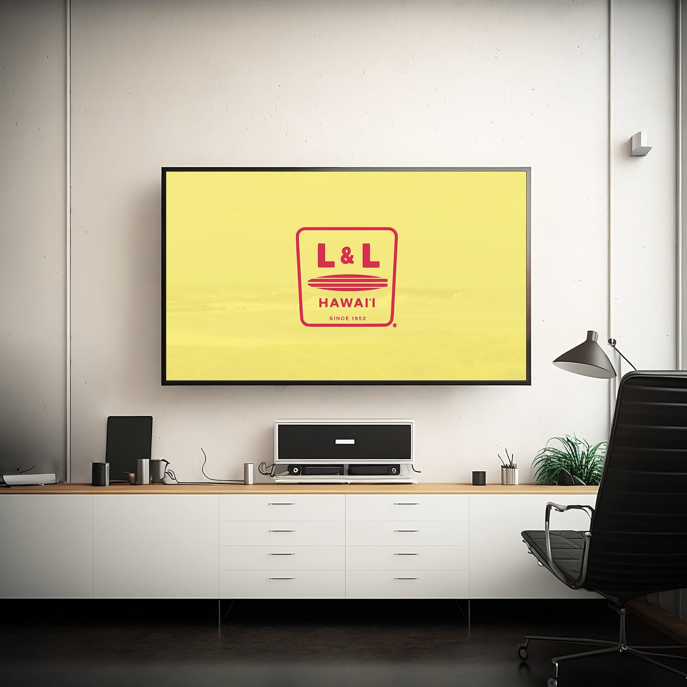

The Challenge
How can the L&L logo — simple in form — be animated in a way that adds energy and visual interest without distracting from the identity’s core shape and meaning?

The Solution
I created an animation that emphasizes rhythm and motion through a sequence of reveal, bounce, and secondary shape movement. Each animated moment was designed to support clarity and personality while retaining the original mark’s integrity.

My Approach
Define Motion Intention
I identified key qualities the logo should express — energy, rhythm, presence — to guide timing and movement decisions.
Focus on Purposeful Motion
Motion choices were limited to those that support clarity and avoid unnecessary complexity — no over-animation.
Refine with Timing and Spacing
Easing curves, timing offsets, and spatial relationships were adjusted to make the animation feel balanced and responsive.


In Conclusion
This animation demonstrates how simple motion principles can elevate a static mark into a dynamic visual experience. The project highlights my ability to apply motion design thoughtfully, keeping purpose and clarity at the forefront of animation work.